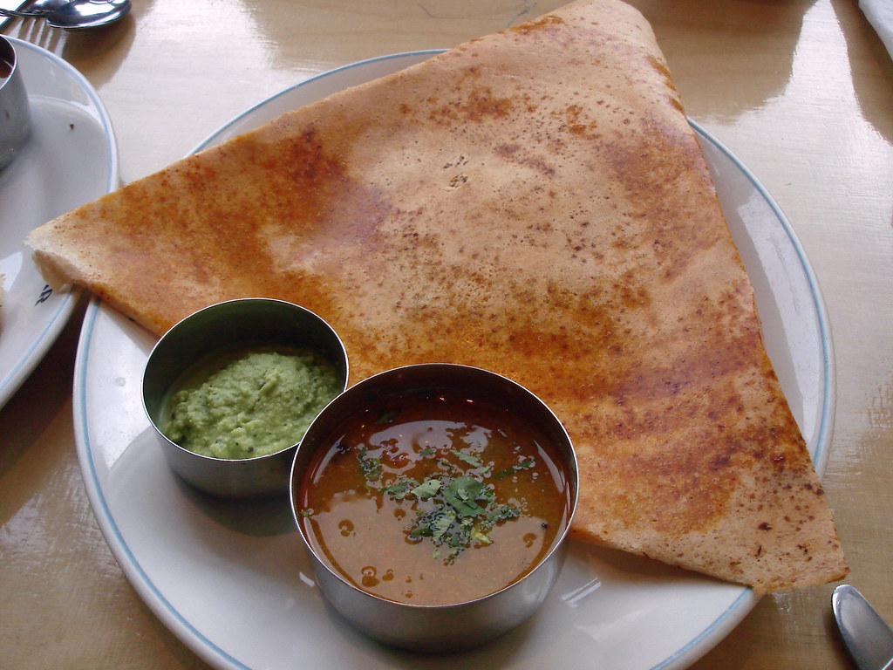

Home
Masala Dosa

Description
Masala dosa is a crispy, golden South Indian crepe made from fermented rice and lentil batter, filled with a flavorful spiced potato mixture. The dosa is thin and crunchy on the outside while remaining slightly soft inside, with the filling adding a warm, savory taste from potatoes, onions, mustard seeds, curry leaves, and aromatic spices.
Traditionally served with coconut chutney and hot, tangy sambar, masala dosa offers a delicious combination of crispiness, softness, spice, and freshness. It’s a wholesome and satisfying dish that works perfectly for breakfast, lunch, or a light dinner.
Ingredients
- 3 Potatoes (big sized)
- 1 Onion
- 2 tablespoon Carrot (finely chopped)
- 2 Green chilli
- 1 tablespoon finely chopped ginger
- 1/8 teaspoon Turmeric powder
- Salt
To temper
- 1 tablespoon Oil
- 1/2 teaspoon Mustard
- 1 teaspoon urad dal
- 2 teaspoon Chana dal
- 5 Cashew nuts
- 1 Curry leaves sprig
For dosa batter
- 2 cups idli rice
- 1/2 cup Urad dal
- 1/2 teaspoon Fenugreek seeds
- 1/2 cup Cooked rice
- Salt
Steps
- Wash and cut each potato into 4 and pressure cook with 1/2 cup water for 3 whistles.
- Peel off the skin and mash it well.
- Heat a pan with oil and temper with the items given under 'to temper' table in order. Let the cashews turn golden.
- Add chopped ginger, green chilli, onion, carrot and fry well for a minute. Add 1/4 cup water, required salt and turmeric.
- Add the mashed potatoes, and mix well. Fry for 2-3 minutes, add oil if needed more.
Make dosa
- Spread 2 ladles of dosa batter thin over hot tawa.
- Drizzle some oil or best ghee. When it gets cooked, smear the top with ladle to make dosa cook evenly.
- No need to flip, just spread a ladle full of masala prepared in the middle.
- Cover it with dosa and serve it immediately.